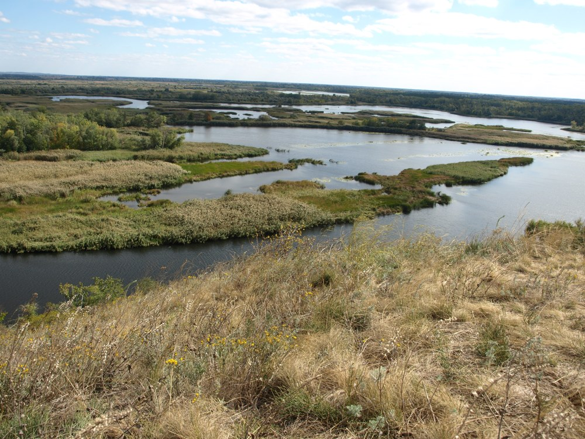

ЛАБОРАТОРНА РОБОТА №6 · ГРЕБЕНЮК ІВАН · 305-ТН
Моя Батьківщина
Кобеляки та Ворскла. Наведіть курсор на фото, щоб побачити підказку, або натисніть, щоб перейти до опису.

Vlad2003 · Wikimedia Commons · CC BY-SA 3.0 · розмір зменшено


Alina Kvasha · Wikimedia Commons · CC BY-SA 4.0 · розмір зменшено

Кобеляки
Місто належить до Полтавської області. На фото — один із краєвидів Кобеляк.
Ворскла й околиці
На другому фото видно дельту Ворскли в Нижньоворсклянському регіональному ландшафтному парку. Серед водних проток і заток тут розташовані острови.